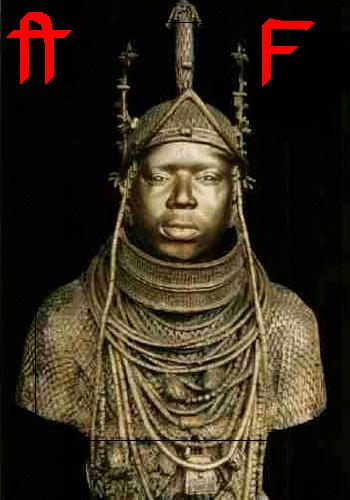
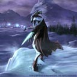

Forums galactiques > Marché galactique : discussions commerciales > ...¤*£{{$Qui veut gagner des Planètes?${{£*¤...
Seigneur vador 02/04 ETU 11:54 | Parceque c'est un zoophile |
titan14 02/04 ETU 12:02 | Je reprends mon histoire déjà citée ci dessus, mais hors concours pour une autre question, car elle colle aussi avec les chèvres Par un après midi de forte chaleur, Ghozer se promenanit dans son berceau A cette époque là, il fumait déjà, des MalboLoises aux fruits (cela ne vous rappelle rien !!!!) Bref, toujours aussi balourd, il mit le feu à son landeau et il fallut prévenir les pompiers qui arrivèrent rapidement sur le lieu de l'incendie Mais nous étions en période de canicule et il n'y avait pas d'eau à la bouche à incendie La seule possibilté d'éteindre l'incendie était d'attaquer le feu à la base, à coup de pelle pour essayer de l'éteindre Mais parmi les pompiers, il y avait un super myope qui avait oublié ses lunettes chez lui Au lieu de viser les flammes, il mit plusieurs coups de pelle sur la tête de notre Ghozer national Heureusement que ses collègues étaient là pour éteindre l'incendie Mais le mal était fait et notre Ghoz y a perdu plusieurs de ses neurones, à force de recevoir des coups sur la tête Par précaution, il fut amené à l'hopital où les médecins pratiquèrent un électro-encéphalogramme qui resta désespéremment plat Son QI fut aussi mesuré - Résultat : QI de 20 (débile profond mais non dangereux) Ceci vous explique pourquoi Ghozer n'est pas intelligent Autre conséquence inattendue : le seul être qui soit aussi intelligent que lui ce sont les.................chèvres bien sûr Vous comprenez maintenant pourquoi, ils fricottent avec ces petites bêtes |
thegrumo_3 02/04 ETU 19:17 | parce que c'est une amie et parce que c'est trés bon!!! |
Wolf 02/04 ETU 19:52 | Ghoser aime les chevres car quand il est etait petit dans son natal que c'etait encore son pere qui gouvernait son pere lui offra une chevre pour son 8eme aniversaire et elle lui sauva la vie plusieur fois |
guitell 02/04 ETU 20:00 | parce que les chèvres ont mangés du nerkabricot donc elles sont genial(vu que c'est pas le meme qui pose la question je change un peu) Et que nerkabricot les rend belles intelligentes et gracieuses contrairement aux GAF donc ghozer fait croire que les gAF sont bons alors que c'st les kerkabricots |
nerka 02/04 ETU 20:37 | Bien essayé Guittel,mais le jeu ne prend pas en compte la pub faite pour mon entreprise... Pour l'instant ,Titan 14 est bien partis pour remporter le prix... |
| nannos  02/04 ETU 20:56 | Ghozer aime les chevres ? ah bon ? si j'ai bien compris il a des penchants "coupables" pour ces petites betes cornues et poilues... Quelle peut en etre la ou les raisons? et bien je pense qu'il faut fouiller dans la petite enfance du commandant, probablement un evenement heureux l'a t'il a la suite d'un "transfert" (comme cela se dit en psychologie) poussé a vouer un amour d'ordre charnel pour ces animaux. Je pense pour ma part que ce transfert est celui de sa mere (psychologie de comptoir , attention!!!!), Ghozer chercherai donc aupres des chevres à assouvir un désir d'enfant inavoué : s'unire physiquement à sa mère ! (eh oui , oedipe est peut etre son second nom!) voila, tout ca ca me ferai presque dire que Ghozer c'est un gros dégueulasse quand meme... mais sans vouloir vous offensez ! |
nannos02/04 ETU 20:58 | Je vous explique pourquoi sa mere ? ---------------------------------------------------- --------------------------------------------------- ---------------------------------------------------- ------------------------------------------------------ à cause du lait , tiens ! |
nerka02/04 ETU 21:13 | Humour psychologique et cultivé.... Du jamais vu !!! Nannos,tu passe en tete !!! |
nerka03/04 ETU 18:23 | Désoler,mais ayant subit un bombardement,je doit prendre de nouvelle perspective concernant ce jeu... 1000 mecanoides ça va ? |
Samsagace 03/04 ETU 18:58 | Ghozer aime les chèvres car...................... Hum ! ...bon je vais l'avouer...il est...né dans un berceau et a été abandonné...les chèvre l'ont recueuillis...on l'appelle Mowgli Des Chèvres. |
| Ulrar II  03/04 ETU 19:03 | ghozer aime les chervres car il quand il etait encore jeune, il est tomber du haut du pont superieur du vaisseau miteux de son pere, il a rebondi sur quelque chose, une chevre, morte sur le coup en lui sauvan le vie, depui des qu'il voit une chevre il lui fait un gros calin pour la remercié, en pensan que c'est elle qui la sauver, depui ce choc il a un peu de mal a comprendre ce qu'est la mort, faut pas lui en vouloir, alor ne le prenez pas pour un fou, il est juste un peu, heu , special. Buvez Ghozer au citron, c'est de la bonne xD |
Marsara 03/04 ETU 19:21 | Dépêchez vous, cdt Ghozer, tous les produits lactés ont une dâte de péremption,y compris les GaF |
Gaïa La Protectrice 04/04 ETU 00:24 | il aime les chevres car en fait a la base, il aimai les moutons transgenisques a huit pattes que l'on trouvai facilement dans une region non loin de vercors qui s'appelait Larzac, bien sur ces moutons etaient exceptionnels : ils couraient vite et sentaient bon la delicate odeur d'une fleur d'anus eclose au printemps, malheureusement les moutons du fait de leur transgeniscité, faisaient des étrons d'une taille ghozerienne (un ghozer un tant soit peu normal fait dans les 1,79m) si bien que Larzac se retrouva bientot submergées de Taupes Galactiques... Comment Ghozer allai il se sortir de ce vil traquenard formenté par Actimiel et ses consors?? il eut soudain une idée de génie, il allai organiser un éxode de moutons transgeniques a huit pattes a travers l'espace afin de sauver la planete Larzac!!! le voyage fut long et fort odrant mais par la force des choses il n'y eut aucun pet de travers meme si il se passa ceci... son second pourtant n'avai pas foi en ses idées et repetait tout le temps: "ghozer, si tu te plantes on est dans la m....!!" mais tel Noé le grand, ghozer continua son périple a travers l'espace quend soudain, son vaisseau lui signala une avarie dans l'arriere train du vaisseau !!! n'ecoutant que son courage ghozer repara la fuite de gaz en deux temps trois mouvements mais la nacelle dans laquelle il se trouva se détacha suite a une explosion dans laquelle il eut chaud aux fesses... extenué son corps deriva dans l'espace alors que son second, sentant qu'il y avait de l'eau dans le gaz, s'enferma dans les toilettes : on ne le revit plus jamais.. ghozer arriva donc sur une planete qui est aujourd'hui sa planete MERE-de son systeme ,si fameux aujourd'hui, avec dans ses poches un fragment d'étron de mouton Larzacien... il sythetisa la substance pour en faire l'ingredient secret de sa plus grande réussite : le Ghozer aux Fruits voila pourquoi ghozer aime tant les chevres et pourquoi il est devenu si célèbre grace aux simples moutons transgeniques a huit pattes de la planete Larzac et si vous regardez le ciel en été vous verrez un phénomene que les anciens appellent une étoile filante, en fait, ce sont les moutons du vaisseau qui conduisent la navette de ghozer, mais vu que la nature les a privé de la lecture, ils ne sauront jamais poser La lunette Blanche, le célèbre vaisseau de ghozer qui marche au gaz(s)... |
nannos04/04 ETU 08:22 | votre proposition concernant les 1000 mecanoides tient elle toujours commandant Nerka ? car elle m'interesse |
nerka05/04 ETU 09:26 | Oui ,elle tient toujours... Contactez moi par MP !!! |
Wolf05/04 ETU 13:23 | Ghoser aime les chevres car il sent sert pour faire ses GAF est ses gardes du corps sont des chevres de combat |
Forums galactiques > Marché galactique : discussions commerciales > ...¤*£{{$Qui veut gagner des Planètes?${{£*¤...